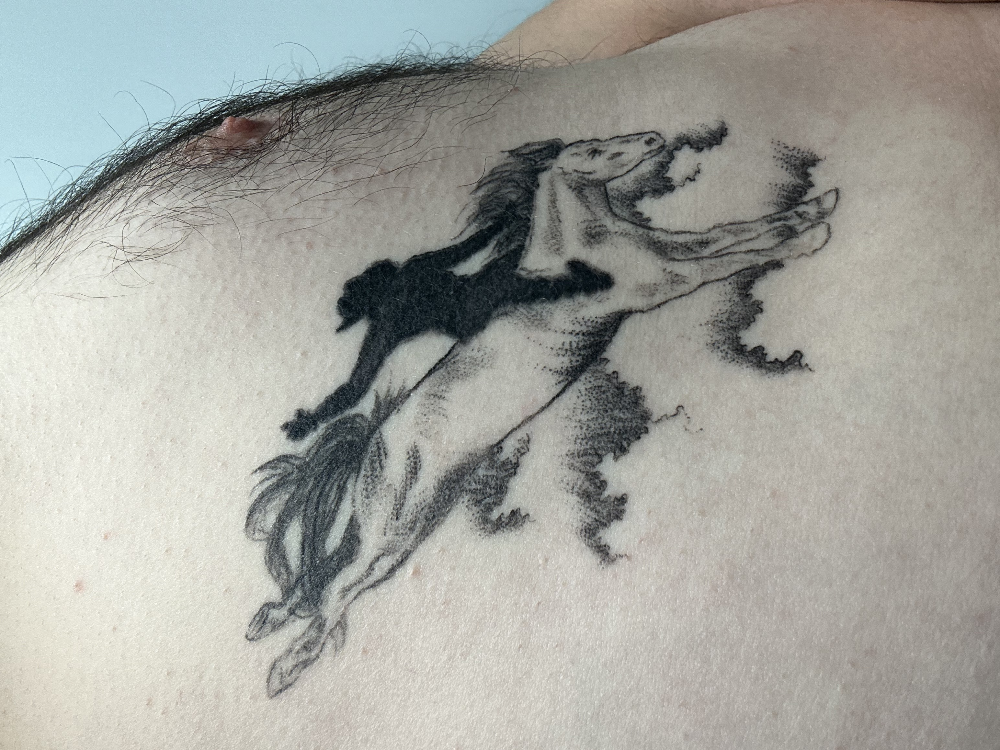
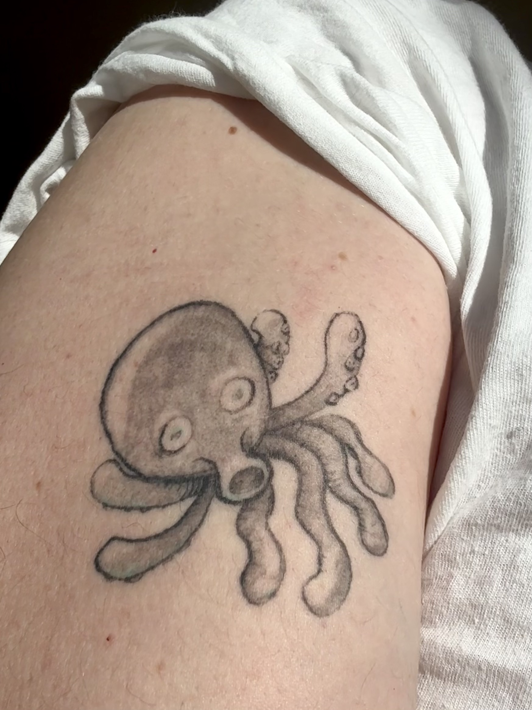
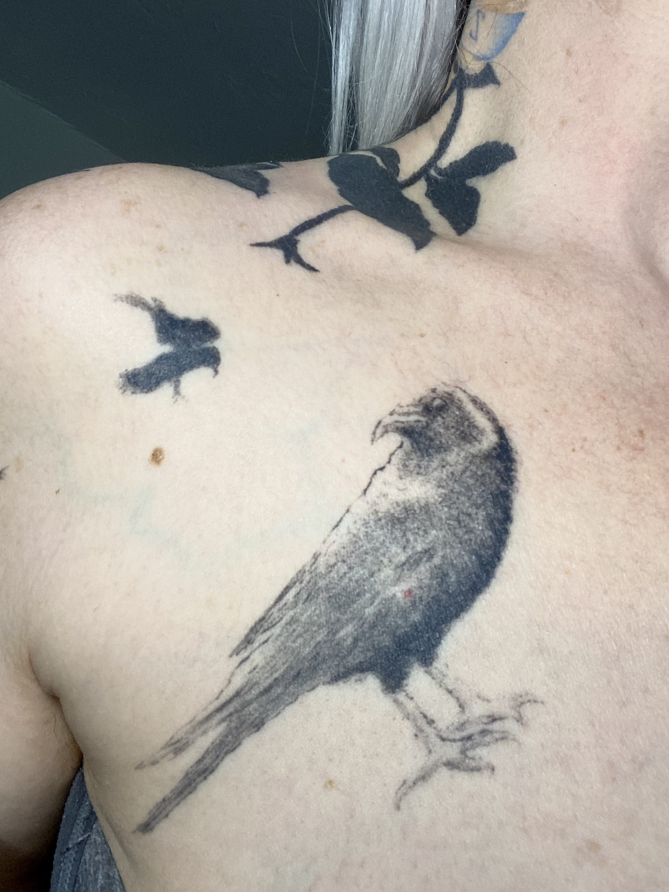
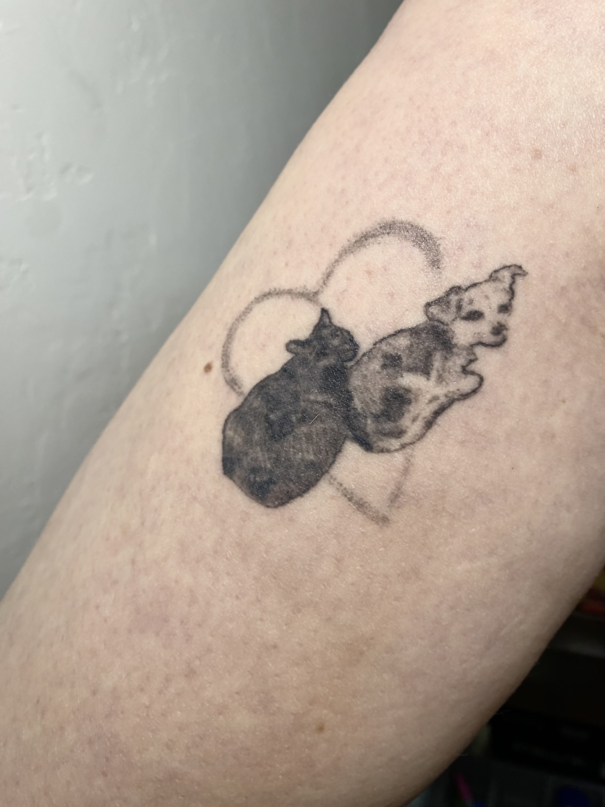
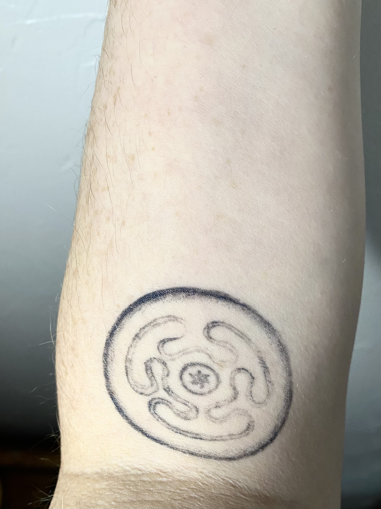
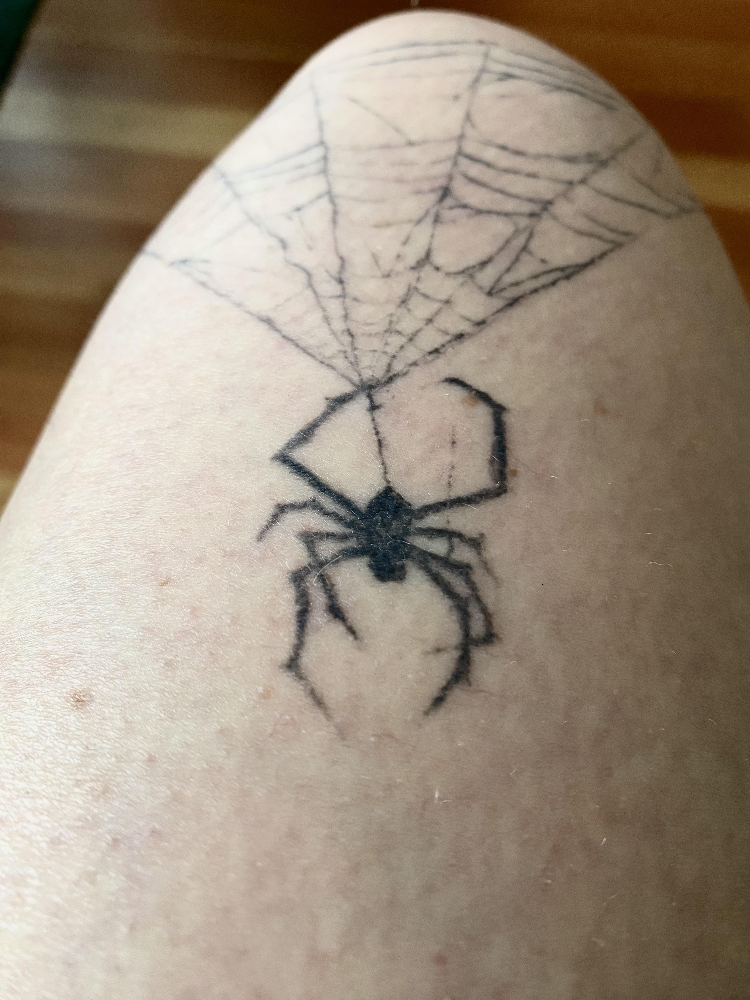
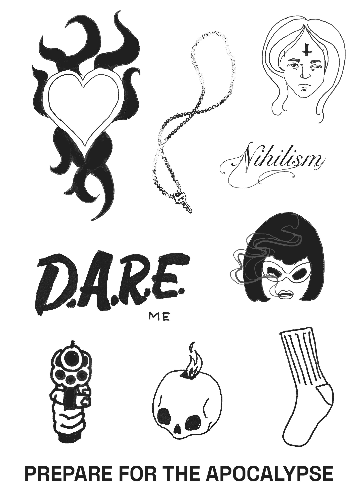
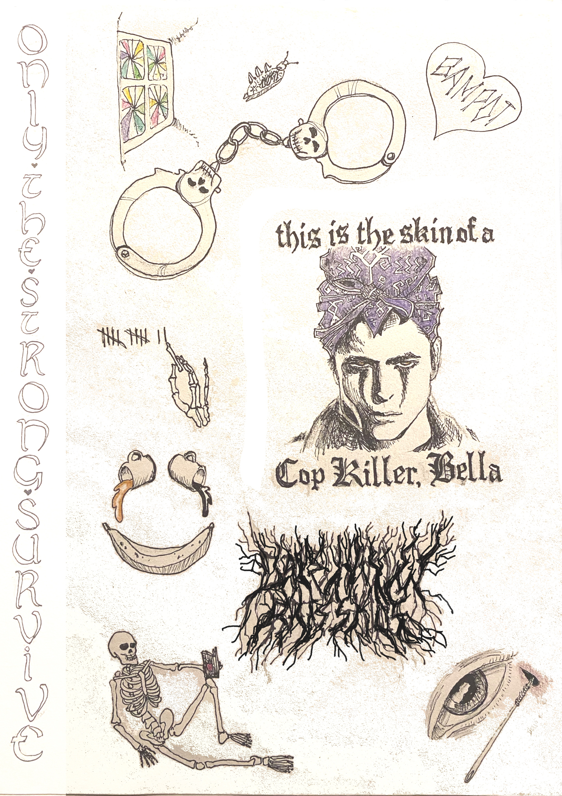
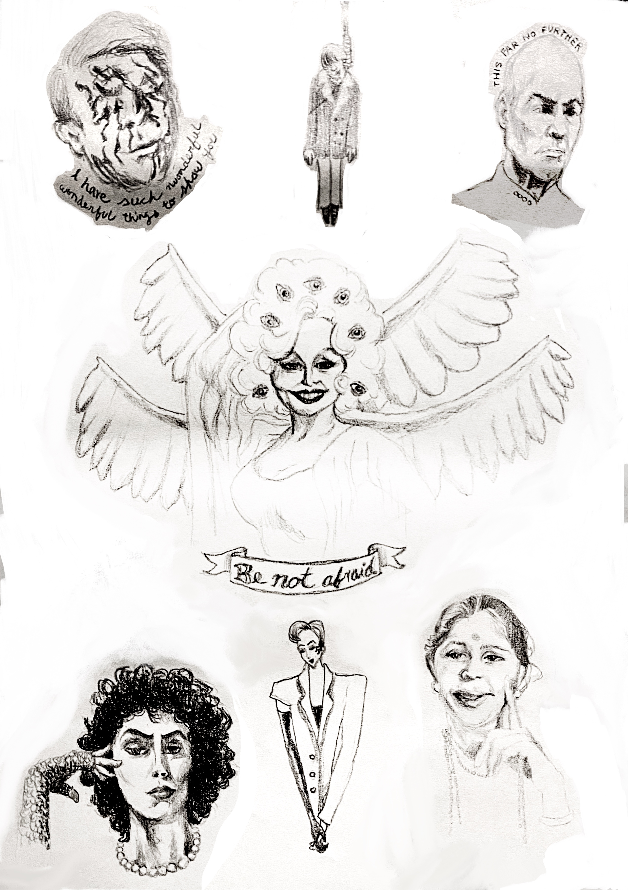

The tattoos I find most compelling are organic and distressed, malignant and haunted. I like tattoos that grow over the body like lichen over an abandoned logging cabin or homemade stickers over an urban transformer box.
Right now I want to do: ignorant style, high contrast, realism, engraving style, sigils, and smoke/ink/watercolor effects. If you've got something else in mind, feel free to get in touch anyway.








